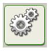

Programovací bloky
Jak bylo již zmíněno, programovací paleta se skládá z palet
Commnon,
Complete a
Custom. Jaké programovací bloky se nacházejí v jednotlivých paletách
si popíšeme v následujícím textu.
Paleta
Commnon obsahuje nejpoužívanější bloky:
Move, Record/Play,
Sound, Display, Wait, Loop a Switch.
Move block (Obr. 1) – Tento blok uvádí motory do pohybu nebo zapíná svítidla.

Obr. 1: Move block
Record/Play block (Obr. 2) – Pomocí tohoto bloku můžete naprogramovat robota
fyzickým pohybem a později pohyb přehrát jinde v programu.
 Obr. 2: Record/Play block
Sound block
Obr. 2: Record/Play block
Sound block (Obr. 3) –
Sound blok umožňuje, aby robot vydával zvuky.
Lze použít přednahrané zvuky.
 Obr. 3: Sound block
Display block
Obr. 3: Sound block
Display block (Obr. 4)
– Display blok vám dává možnost ovlivnit,
co bude zobrazeno na displeji NXT kostky. Muže být zobrazen text,
ikony nebo můžete sami něco nakreslit. Umístěním několika bloků
za sebou můžete vytvářet velmi složité motivy.
 Obr. 4: Display block
Wait block
Obr. 4: Display block
Wait block (Obr. 5) – Tento blok donutí robota čekat, dokud není splněna
určitá podmínka. Robot může například čekat, dokud zvukový senzor
nezaregistruje nějaký zvuk, nebo dokud neuplyne přednastavený čas a další
nastavené možnosti. V paletě
Common to je jediný blok, který má takovou funkci,
že když najedete kurzorem myši nad ikonu s přesýpacími hodinami,
tak se rozbalí nabídka s pěti druhy
Wait bloků, které se od sebe liší podmínkou
čekání.
 Obr. 5: Wait block
Loop block
Obr. 5: Wait block
Loop block (Obr. 6) –
Loop blok je určen k tomu, aby robot dělal určitou
činnost znovu a znovu. Například, aby se pohyboval pořád dopředu,
dokud nebude stlačen dotykový senzor.
 Obr. 6: Loop block
Switch block
Obr. 6: Loop block
Switch block (Obr. 7) – Díky tomuto bloku může robot dělat rozhodnutí.
Například, aby zahnul vpravo, pokud uslyší hodně hlasitý zvuk,
aby zahnul vlevo, když uslyší málo hlasitý zvuk.
 Obr. 7: Switch block
Obr. 7: Switch block
Paleta
Complete obsahuje kompletně všechny programovací bloky.
Skládá se ze šesti sekcí, na které když najedete kurzorem myši,
tak se rozbalí nabídka s bloky, které patří do dané sekce. Sekce jsou následující:
Common, Action, Sensor, Flow, Data a
Advanced blocks.
Common blocks (Obr. 8) – Tato skupina bloků je shodná s těmi,
které jsou dostupné na paletě
Commnon.
 Obr. 8: Common bloky
Action blocks
Obr. 8: Common bloky
Action blocks (Obr. 9) – Tyto bloky umožňují ovládat chování výstupních
zařízení: interaktivní servomotor, NXT reproduktor, NXT displej,
Bluetooth (odeslání) a svítidla.
 Obr. 9: Action bloky
Sensor blocks
Obr. 9: Action bloky
Sensor blocks (Obr. 10) – Kombinací těchto bloků se senzory umístě
nými na vašem robotovi lze řídit jeho chování. Bloky odpovídají dotykovému,
zvukovému, světelnému a ultrazvukovému senzoru; NXT tlačítka; otáčení servomotorů;
časovače;
Bluetooth (příjem) a volitelný teplotní senzor.
 Obr. 10: Sensor bloky
Flow blocks
Obr. 10: Sensor bloky
Flow blocks (Obr. 11) – Tyto bloky umožňují vytvářet více komplexní chování robota.
Jsou zde bloky pro čekání, opakování, rozhodování a blok pro zastavení určité činnosti nebo
pro logický tok v programu.
 Obr. 11: Flow bloky
Data blocks
Obr. 11: Flow bloky
Data blocks (Obr. 12) – Slouží pro nastavení booleovské logiky, matematiky,
porovnání, rozsahu, náhodných podmínek, proměnných nebo konstant.
 Obr. 12: Data bloky
Advanced blocks
Obr. 12: Data bloky
Advanced blocks (Obr. 13) – Používají se pro konvertování dat na text, přidání textu,
ovládání funkce
sleep na NXT kostce, ukládání souborů v NXT kostce, kalibraci senzorů,
resetování motorů, zahájení a ukončení záznamu dat nebo připojení pomocí
Bluetooth.
 Obr. 13: Advanced bloky
Obr. 13: Advanced bloky
Paleta
Custom obsahuje dvě ikony:
My Blocks a
Web Downloads.
My Blocks (Obr. 14) – Zde najdete bloky, které jste si sami vytvořili.
Můžete několik bloků
sloučit do jednoho a pak ho využít v dalších programech.
 Obr. 14: My Blocks
Web Downloads
Obr. 14: My Blocks
Web Downloads (Obr. 15) – V této sekci se nachází bloky, které jste stáhnuli z emailu,
portálu nebo z webových stránek jako je například www.MINDSTORMSeducation.com.
 Obr. 15: Web Downloads
Obr. 15: Web Downloads